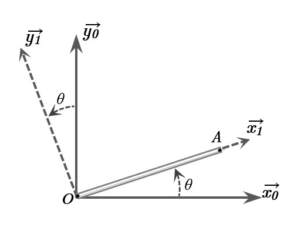

Figure 1 : Rotation d'une Barre BOA
Données Clés :
La question demande la matrice de passage \( \mat{P}_{0 \to 1} \) (de la base \(B_0\) vers la base \(B_1\)). Il est souvent plus direct de déterminer d'abord \( \mat{P}_{1 \to 0} \) (de \(B_1\) vers \(B_0\)), dont les colonnes sont les vecteurs de \(B_1\) exprimés dans \(B_0\). Ensuite, comme les bases sont orthonormées, \( \mat{P}_{0 \to 1} = (\mat{P}_{1 \to 0})^T \).
\( \mat{P}_{1 \to 0} = \matrice{\cos\theta & -\sin\theta & 0 \\ \sin\theta & \cos\theta & 0 \\ 0 & 0 & 1} \)
Usage : \( \begin{pmatrix} V_{x0} \\ V_{y0} \\ V_{z0} \end{pmatrix}_{B_0} = \mat{P}_{1 \to 0} \begin{pmatrix} V_{x1} \\ V_{y1} \\ V_{z1} \end{pmatrix}_{B_1} \).
C'est la matrice demandée par la question.
\( \mat{P}_{0 \to 1} = (\mat{P}_{1 \to 0})^T = \matrice{\cos\theta & \sin\theta & 0 \\ -\sin\theta & \cos\theta & 0 \\ 0 & 0 & 1} \)
Usage : \( \begin{pmatrix} V_{x1} \\ V_{y1} \\ V_{z1} \end{pmatrix}_{B_1} = \mat{P}_{0 \to 1} \begin{pmatrix} V_{x0} \\ V_{y0} \\ V_{z0} \end{pmatrix}_{B_0} \).
\( \vec{\Omega}_{R_1/R_0} = \dot{\theta} \vec{z}_1 \)
En composantes dans la base \( B_1 \) (associée à \(R_1\)) :
\( (\vec{\Omega}_{R_1/R_0})_{/B_1} = \matrice{0 \\ 0 \\ \dot{\theta}}_{R_1} \)
Préalablement, notons que le point O, origine commune des repères, est fixe dans \(R_0\), donc \( \vec{V}_{O/R_0} = \vec{0} \). Les points A et B sont fixes sur la barre BOA, et le repère \(R_1\) est lié à cette barre. Par conséquent, les vitesses des points A et B par rapport à \(R_1\) (vitesses relatives) sont nulles : \( \vec{V}_{A/R_1} = \vec{0} \) et \( \vec{V}_{B/R_1} = \vec{0} \).
Le vecteur position du point A est \( \vec{OA} = L \vec{x}_1 \).
On utilise la relation fondamentale du champ des vitesses pour un solide :
\( \vec{V}_{A/R_0} = \vec{V}_{O/R_0} + \vec{\Omega}_{R_1/R_0} \wedge \vec{OA} \)
\( \vec{V}_{A/R_0} = \vec{0} + (\dot{\theta} \vec{z}_1) \wedge (L \vec{x}_1) = L \dot{\theta} (\vec{z}_1 \wedge \vec{x}_1) \)
Puisque \( (\vec{x}_1, \vec{y}_1, \vec{z}_1) \) est une base orthonormée directe, \( \vec{z}_1 \wedge \vec{x}_1 = \vec{y}_1 \).
\( \vec{V}_{A/R_0} = L \dot{\theta} \vec{y}_1 \)
Exprimée dans \(R_1\) (base \(B_1\)) :
\( \vec{V}_{A/R_0} = L \dot{\theta} \vec{y}_1 \quad \implies \quad (\vec{V}_{A/R_0})_{/B_1} = \matrice{0 \\ L\dot{\theta} \\ 0}_{R_1} \)
Exprimée dans \(R_0\) (base \(B_0\)) :
On utilise la matrice de passage \( \mat{P}_{1 \to 0} \) : \( (\vec{V}_{A/R_0})_{/B_0} = \mat{P}_{1 \to 0} (\vec{V}_{A/R_0})_{/B_1} \).
\( (\vec{V}_{A/R_0})_{/B_0} = \matrice{\cos\theta & -\sin\theta & 0 \\ \sin\theta & \cos\theta & 0 \\ 0 & 0 & 1} \matrice{0 \\ L\dot{\theta} \\ 0}_{R_1} = \matrice{-L\dot{\theta}\sin\theta \\ L\dot{\theta}\cos\theta \\ 0}_{R_0} \)
Donc, \( \vec{V}_{A/R_0} = -L\dot{\theta}\sin\theta \vec{x}_0 + L\dot{\theta}\cos\theta \vec{y}_0 \).
Le vecteur position du point B est \( \vec{OB} = -\frac{L}{2} \vec{x}_1 \).
On utilise la relation fondamentale du champ des vitesses :
\( \vec{V}_{B/R_0} = \vec{V}_{O/R_0} + \vec{\Omega}_{R_1/R_0} \wedge \vec{OB} \)
\( \vec{V}_{B/R_0} = \vec{0} + (\dot{\theta} \vec{z}_1) \wedge (-\frac{L}{2} \vec{x}_1) = -\frac{L}{2} \dot{\theta} (\vec{z}_1 \wedge \vec{x}_1) \)
Avec \( \vec{z}_1 \wedge \vec{x}_1 = \vec{y}_1 \).
\( \vec{V}_{B/R_0} = -\frac{L}{2} \dot{\theta} \vec{y}_1 \)
Exprimée dans \(R_1\) (base \(B_1\)) :
\( \vec{V}_{B/R_0} = -\frac{L}{2} \dot{\theta} \vec{y}_1 \quad \implies \quad (\vec{V}_{B/R_0})_{/B_1} = \matrice{0 \\ -\frac{L}{2}\dot{\theta} \\ 0}_{R_1} \)
Exprimée dans \(R_0\) (base \(B_0\)) :
On utilise la matrice de passage \( \mat{P}_{1 \to 0} \) : \( (\vec{V}_{B/R_0})_{/B_0} = \mat{P}_{1 \to 0} (\vec{V}_{B/R_0})_{/B_1} \).
\( (\vec{V}_{B/R_0})_{/B_0} = \matrice{\cos\theta & -\sin\theta & 0 \\ \sin\theta & \cos\theta & 0 \\ 0 & 0 & 1} \matrice{0 \\ -\frac{L}{2}\dot{\theta} \\ 0}_{R_1} = \matrice{\frac{L}{2}\dot{\theta}\sin\theta \\ -\frac{L}{2}\dot{\theta}\cos\theta \\ 0}_{R_0} \)
Donc, \( \vec{V}_{B/R_0} = \frac{L}{2}\dot{\theta}\sin\theta \vec{x}_0 - \frac{L}{2}\dot{\theta}\cos\theta \vec{y}_0 \).